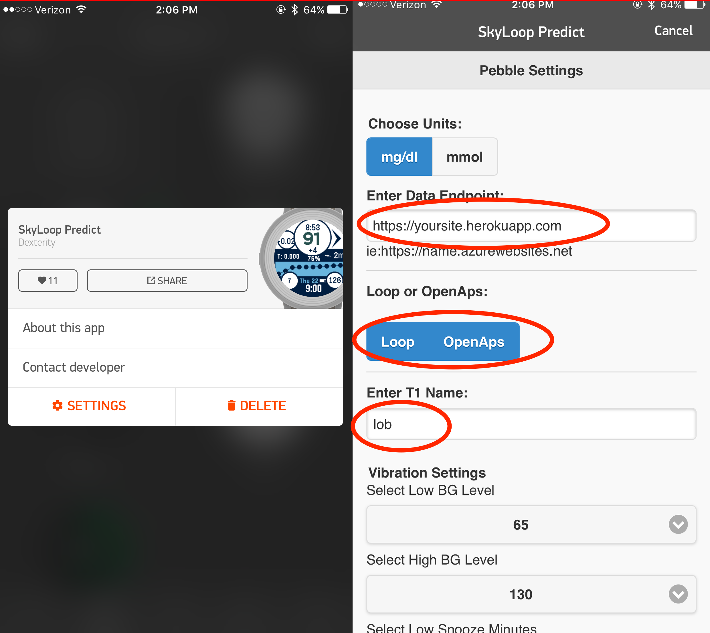
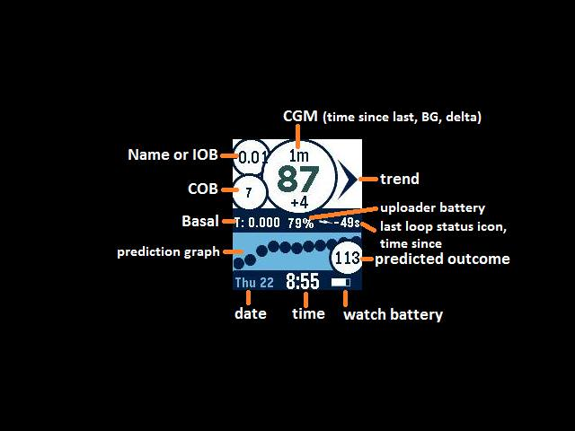

Pebble Watchface⌁
The Pebble Watchface called SkyLoop Predict can be used with either Loop or OpenAPS systems. You will need to have a Nightscout website setup and integrated in order for the watchface to work. Simply use your Pebble app to search for the watchface and install it. In the watchface settings, enter your Nightscout URL in the Data Endpoint field, select Loop for the system, and enter iob in the T1 Name field. By entering iob, the watchface will display the iob on the watchface. In addition to the information displayed on the main watchface screen, shaking your wrist will bring up information about the pump battery and reservoir levels.

